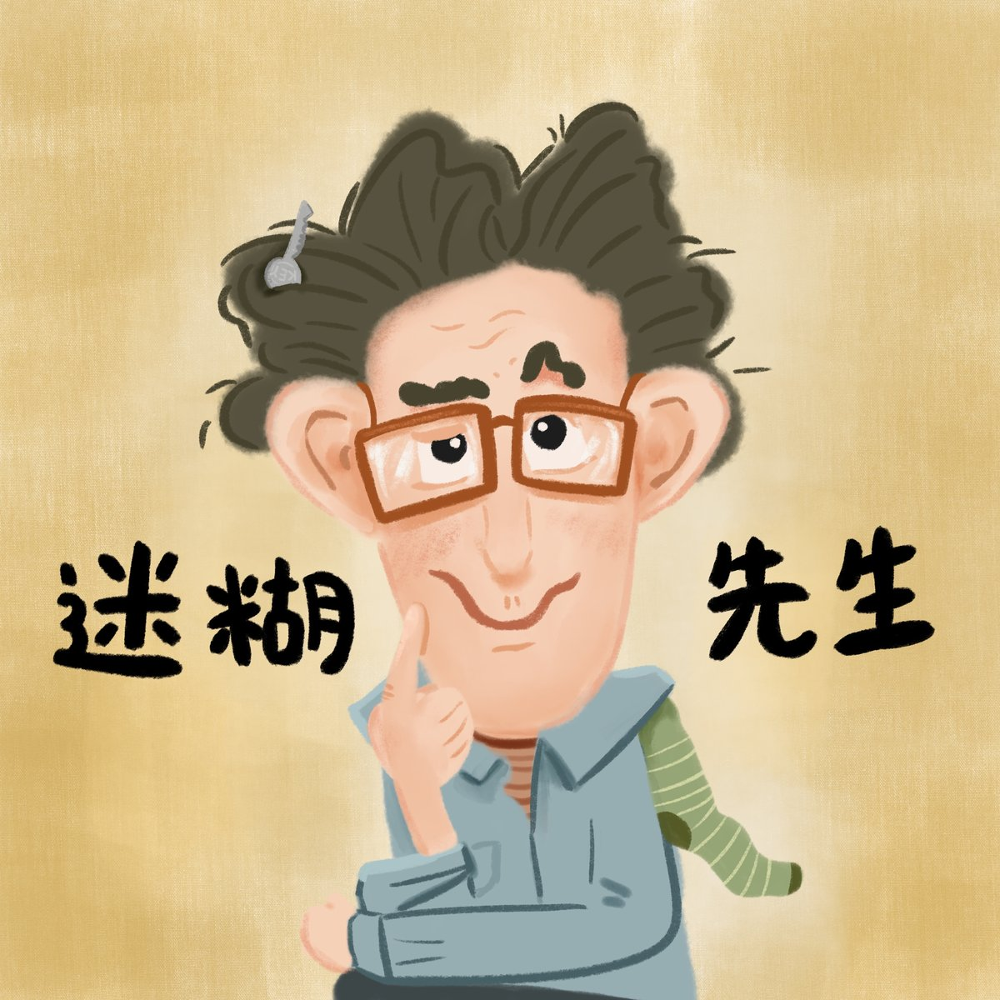

完整版廣播劇，含配音與音效，供角色聲音表情參考。
夏天的第一天，迷糊先生擦好吊扇、打開開關，看到吊燈晃來晃去，以為地震來了，把整條街的鄰居全都叫出門——結果只是吊扇的風。他每做一件事都覺得「我真細心，我真棒！」，卻總在下一秒闖出新的禍。
為了跟鄰居道歉，迷糊先生決定烤蛋糕：去雞舍撿蛋卻忘了關門，母雞全跑了出來；到雜貨店忘了看食譜，乾脆買最大包的麵粉和砂糖，一路拖回家，袋子磨破了都沒發現，整條街灑滿了麵粉和糖。回到家，他連自己為什麼要做蛋糕都忘了，想了半天認定「一定是我生日！」，還為了練習吹蠟燭把家裡燒了起來。
鄰居們一邊抓雞、一邊刷洗街道、一邊救火，忙得團團轉。沒想到滅火的水混上清潔劑，整條街變成了巨大的泡泡浴缸——迷糊先生感動地以為這是大家幫他準備的生日驚喜。他的生日明明是冬天，但看他這麼開心，連鄰居都被搞迷糊了，最後乾脆一起玩起泡泡。
哈囉，我們來一起說故事囉！今天要說的故事叫做《迷糊先生》，改編自小絜的《迷糊先生》。
（蟬聲）
夏天的第一天，迷糊先生搬來了一把梯子。
迷糊先生：嘿咻、嘿咻
迷糊先生把梯子擺好，小心地爬上去，用抹布輕輕把吊扇上面的灰塵擦乾淨。
迷糊先生：嘿嘿，在開吊扇之前記得要擦灰塵，我真細心，我真棒！
迷糊先生把工具收好，開開心心地坐在沙發上，打開吊扇，準備享受乾淨的涼風，可是，他發現——
迷糊先生：咦！吊燈！吊燈怎麼晃來晃去！不好了，地震了！地震了！
迷糊先生好慌張，他立刻跑出家門，去敲每一個鄰居的門
迷糊先生：地震了！地震了！趕快出來！趕快出來！
眾鄰居：怎麼回事啊？有地震嗎？不知道耶我沒感覺到啊
迷糊先生的鄰居們全部跑出家門，迷糊先生覺得
迷糊先生：（喘）雖然地震很緊張，可是我記得要通知大家，我真細心，我真棒！
鄰居A：迷糊先生，我們都沒有感覺到地震啊！
迷糊先生：有！真的有！你們看，我的吊燈晃來晃去！對吧？
鄰居小孩：迷糊先生，那是因為你開了吊扇！是風吹的，不是地震！
迷糊先生：欸⋯⋯欸？真的耶，哈哈哈哈
（眾鄰居抱怨離去）鄰居們搖搖頭，各自回去了。迷糊先生覺得有點難過，因為他太迷糊了，造成鄰居的困擾。
迷糊先生：嗯⋯⋯我一定要想個方法道歉才行⋯⋯對了！我可以烤蛋糕請大家吃！
迷糊先生立刻跑回家，拿一張紙，寫下需要的材料。
迷糊先生：這樣就不怕忘記買東西了，我真細心，我真棒！
迷糊先生的心情一下子就變好了。他邊吹口哨邊散步到雞舍。
迷糊先生：首先，我需要雞蛋，我帶了籃子和軟軟的布來裝，這樣就不怕打破雞蛋了～
迷糊先生覺得他真細心，他真棒，可是，他撿完雞蛋，離開雞舍的時候，忘記把門關上了，母雞們全部都跑出來啦！（一堆雞叫）
但是，迷糊先生沒有發現，因為他趕著去雜貨店買做蛋糕的材料。
迷糊先生：老闆，我要麵粉跟砂糖！
老闆：好的，你要多少？
迷糊先生：呃⋯⋯呃⋯⋯
糟糕，迷糊先生忘記先看食譜，他不知道做蛋糕需要多少麵粉和砂糖，但是，他想到一個好主意。
迷糊先生：我、我要買最大包的！
老闆：好的，最大包的麵粉跟砂糖～
（十公斤的麵粉跟砂糖袋丟到地上的聲音）
迷糊先生：嘿嘿，買最大包的，一定夠用，我真是會臨機應變，我真棒！
可是，最大包的麵粉跟砂糖好重好重，迷糊先生完全搬不動，所以，他用拖的。
迷糊先生：嘿～～咻！嘿～～咻！
迷糊先生一開始拖著麵粉袋跟砂糖袋，他覺得好重好重，可是過了一陣子
迷糊先生：嘿咻～嘿咻～咦？變得好輕鬆，我力氣變大了，我真棒！
迷糊先生完全沒有發現，原來是麵粉袋跟砂糖袋在地上一直磨、一直磨，早就磨破了！整條路上，都是迷糊先生漏出來的麵粉跟砂糖。但是，迷糊先生沒有發現。
（關門）迷糊先生回到家。
迷糊先生：真是辛苦我了，來做蛋糕囉！
迷糊先生捲起袖子，正準備做蛋糕的時候，他突然停下來，歪著頭說
迷糊先生：是說，我為什麼要做蛋糕啊？
迷糊先生忘記自己為什麼要做蛋糕了！他抓抓頭，想啊想，想了好久好久，終於想到
迷糊先生：一定是因為我生日吧！哈哈，我連自己的生日都忘記，我真是迷糊啊！還好我想起來了！
迷糊先生覺得很高興，然後，他又想到了——
迷糊先生：既然是我的生日，大家應該會想送我禮物，可是，應該會有人很迷糊，忘記包裝禮物！我應該幫他們準備包裝紙，這樣，他們就可以包裝禮物了！我真貼心，我真棒！
迷糊先生馬上拿出一大捲圖畫紙，他把畫紙拉得好長好長，在上面畫了滿滿的漂亮的圖案。
迷糊先生：完成了！真是漂亮的包裝紙啊！啊，對了，如果是生日蛋糕的話，一定要有那個東西⋯⋯
迷糊先生邊說，邊走到儲藏室找東西。這個時候，迷糊先生的鄰居們在做什麼呢？
（雞飛狗跳）
鄰居A：怎麼回事？怎麼到處都是雞！
鄰居B：欸欸欸！不要亂踩我的花園！
鄰居C：哎唷我踩到雞屎了啦！！
（狗開心舔舔叫叫）
鄰居D：小白！小白不要舔路上的粉！那是什麼！！
鄰居小孩：是砂糖，好甜喔呵呵呵呵
鄰居A：（崩潰）不可以吃路上的砂糖啦！！
鄰居們忙得團團轉，他們跑來跑去，要把雞抓回來。（鄰居忙、雞叫、飛飛飛）還在地上潑了水跟清潔劑，準備把砂糖和麵粉跟雞的便便都刷掉，但是——
鄰居小孩：怎麼有煙！迷糊先生的家有煙！
（眾人倒抽一口氣）
鄰居A：不好了！失火了失火了！！迷糊先生家發生火災了！！
（消防車的聲音、滅火聲、眾人忙碌）
所有的人忙進忙出，總算把迷糊先生家的火給滅了，還好，大家都沒有受傷，迷糊先生也平安無事。
鄰居A：到底發生什麼事了？
鄰居B：迷糊先生你家怎麼會發生火災？
迷糊先生：呃⋯⋯
迷糊先生有點不好意思地抓抓頭，他說。
迷糊先生：我就是覺得，生日蛋糕上面一定要有蠟燭，所以我去找蠟燭，找到蠟燭之後，想說先點燃，來練習把蠟燭吹熄⋯⋯
眾人：蛤？？
迷糊先生：我想要吹蠟燭的時候，看起來很厲害，所以就先練習了呵呵呵呵⋯⋯
結果迷糊先生沒有把火吹熄，卻不小心把蠟燭吹倒，倒在包裝紙上，一下子就燒起來了。
迷糊先生：真是抱歉，讓大家擔心了⋯⋯
迷糊先生低下頭跟大家道歉，就在這個時候，一個小小的泡泡從窗外飛了進來，飛到迷糊先生的鼻子上，然後破掉。
迷糊先生：咦？怎麼有泡泡？
迷糊先生走出家門，發現原本用來滅火的水流到街上，跟清潔劑混合出好多好多的泡泡，整條街像是一個超大的泡泡浴缸！
迷糊先生：哇～～～～外面在開泡泡派對嗎？
迷糊先生眼睛都亮了起來
迷糊先生：原來你們幫我準備了這麼棒的生日驚喜！謝謝大家！
迷糊先生開心地在泡泡街上跑來跑去，鄰居們看傻了眼
鄰居A：他說什麼？生日？
鄰居B：誰生日啊？
鄰居C：不知道耶，是他生日嗎？
鄰居小孩：不是吧，我記得他生日是冬天啊。
眾鄰居：我也記得啊。
（迷糊先生在背景：哈哈哈哈～哈哈哈哈～）
鄰居A：可是他現在這麼開心，可能今天真的是他生日吧？
鄰居B：那應該是我們記錯了吧
眾鄰居：應該是喔～
鄰居小孩：是說，我有點想玩泡泡耶⋯⋯
鄰居C：我也是⋯⋯
鄰居D：我也是⋯⋯
鄰居A：那就一起去玩吧！
迷糊先生、鄰居們：哈哈哈哈哈～哈哈哈哈哈～
迷糊先生真是太迷糊了，迷糊到，連鄰居都被他搞迷糊了。
這就是今天的故事《迷糊先生》，感謝小絜的提供喔！